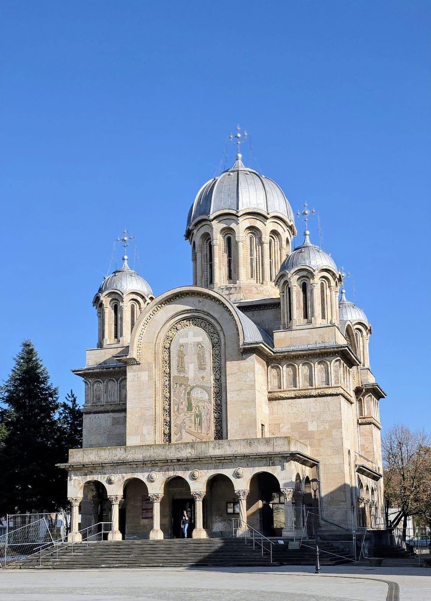
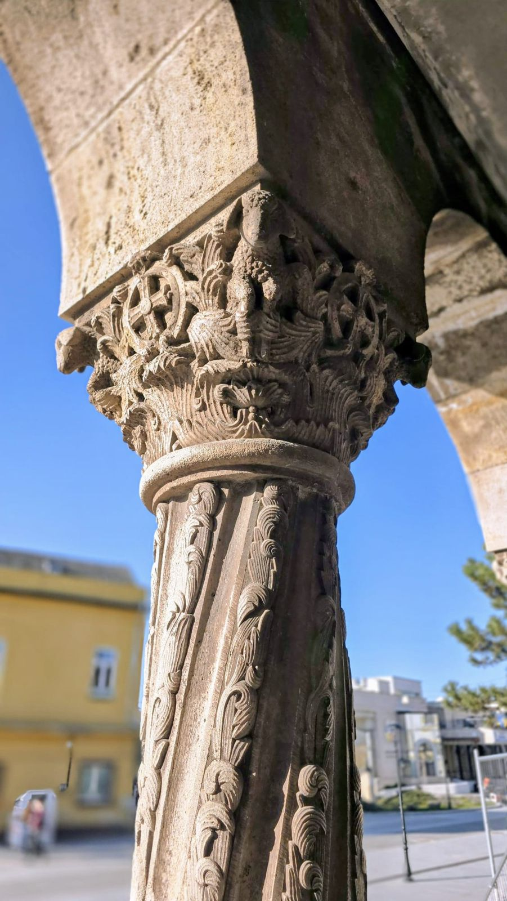
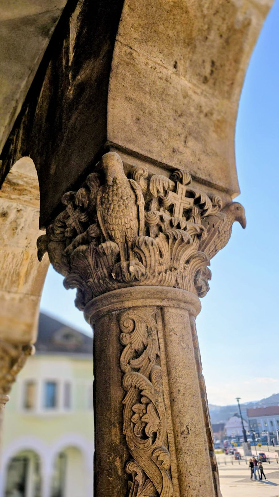
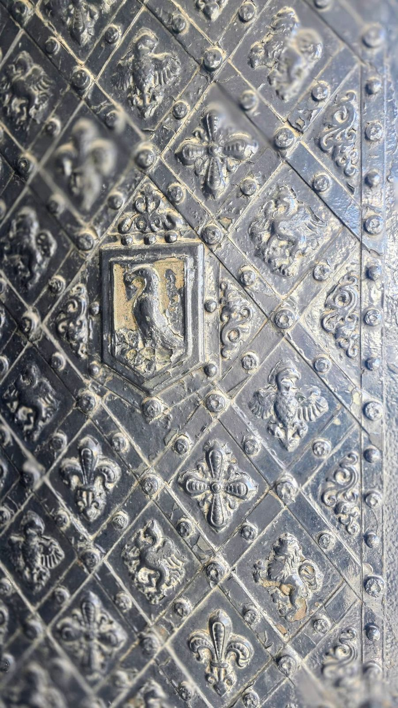

Journey 02 · Hunedoara Note 11 of 12 Field Note
Following the Bells
A Story about Music, Incense and Panic
One of the things I did not expect to experience in Hunedoara was accidentally attending part of an Orthodox church service.

I had been walking through town on Saturday, wandering without much of a plan, when I heard bells ringing and music drifting through the air. The sound was beautiful enough that I followed it, eventually arriving at a large Orthodox church near the center of town.
The doors were wide open.
From outside I could hear the singing more clearly now. It was haunting, beautiful, and resonant in a way that immediately caught my attention. I stepped inside, thinking I might quietly look around for a moment and then slip back out, just as I have done in countless churches across Europe.

Instead, I walked directly into the middle of a full service.
There is a very particular moment of panic that happens when you realize you have entered a space where everyone else knows exactly what is happening and you absolutely do not.
Turning around immediately felt rude, so I did the only thing I could think of and slid quietly along the wall to stand in the back of the church. A few other late-coming visitors had done the same thing, forming a kind of informal line of people in a semi-circle around the back, and I tried very hard not to disturb anything as I joined it.
Within a few minutes it became obvious that several of my assumptions about Orthodox churches were completely wrong.
For one thing, the music.
Two singers stood near the front of the church, their voices filling the entire space. No one else was singing with them. It wasn’t a hymn the way I would normally think of one. Instead, it felt like the singers were carrying a musical thread through the service itself, weaving their voices in and out of the priest’s words.
Occasionally the priest would speak in a tone that sounded almost musical but not quite singing, like a recitation that followed the same rhythm as the singing chant.
The acoustics in the church were extraordinary. The voices echoed through the space in a way that made it almost impossible not to relax and listen. The scent of incense filled the entire room.
Despite my anxiety about not knowing what was happening, the atmosphere itself was incredibly calming. The chanting reminded me of the feeling I get when listening to Buddhist or meditative chanting: something about the repetition and tone quiets the mind almost immediately.
Every surface of the church was covered with imagery: painted saints, elaborate gold details, scenes from scripture. It was beautiful and overwhelming at the same time. I found myself wanting to examine everything

closely, but it felt wrong to wander around taking photographs during a religious service. Still, I couldn’t help but be drawn to the interior artworks, at once so similar yet so distinct from what I had come to expect from older Catholic Churches in Europe.
As I stood there, I began noticing the small movements happening throughout the congregation. Some people crossed themselves, but not in the way I had seen in movies. Others bowed their heads slightly where they stood. At one point an elderly woman walked slowly to the altar area and knelt in front of what looked like a cabinet filled with icons.
Then the priest began moving through the church.

He carried a large incense burner on a chain, swinging it rhythmically as he walked. The censer looked almost like an ornate lamp, and each swing caused the bells attached to it to ring. The sound mixed with the chanting and the scent of incense, creating a strangely hypnotic atmosphere.
Some members of the congregation reached toward the censer as he passed. Others crossed themselves or bowed.
And then he started coming toward the back of the church.
Which meant he was heading directly toward me.
At this point my internal monologue shifted from curiosity to full panic.
Was I supposed to do something? Give him money? Was this the Orthodox equivalent of passing the offering plate? Had I accidentally positioned myself exactly where some important interaction was about to happen? Should I leave now, or would that be unbearably rude? Was I supposed to cross myself? How do I cross myself? Is it more offensive to do it wrong or not do it all or do it without being a member? Am I supposed to say something? One thousand panicked thoughts in my head in the few moments it was talking for the priest to walk the semi-circle of people in the back.
The priest approached me, the censer swinging gently, the singers’ voices swelling behind him.
My eyes must have been enormous, because he looked directly at me, paused for a moment, and smiled a little. Then he simply continued on to the elderly women standing beside me, who crossed themselves as he passed.
It was the first time I had seen him smile during the service, and I immediately felt relief that I had not done something impossibly wrong and took it as reassurance that my presence there was not a problem.
Not long after that moment, I slipped out of the church.
I would have loved to stay longer. The music, the incense, the rhythm of the service, and the beauty of the space made it an extraordinary experience to witness.
But I was also deeply aware that I was an outsider who did not understand the traditions unfolding around me, and the last thing I wanted was to accidentally offend someone during a sacred moment.
So I stepped back outside into the afternoon sunlight, the sound of chanting still drifting through the open doors and into the promenade.
It had only been a few minutes, but it felt like stepping briefly into another world.
Originally published at fieldnotesfromabroad.com/2026/03/14/field-notes-following-the-bells/